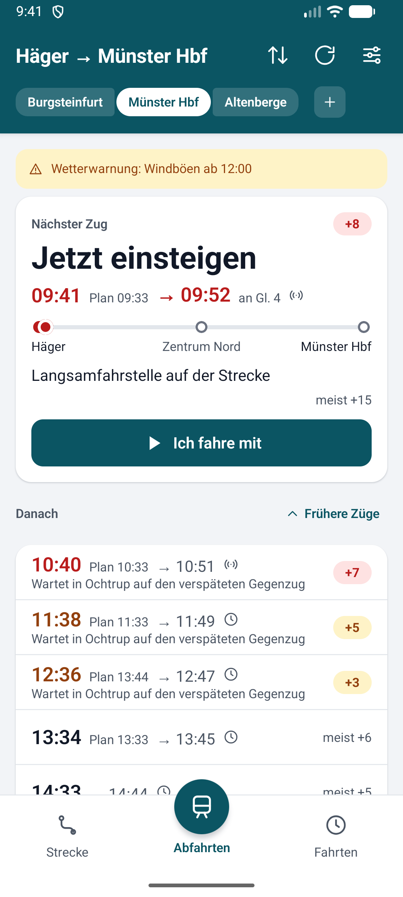
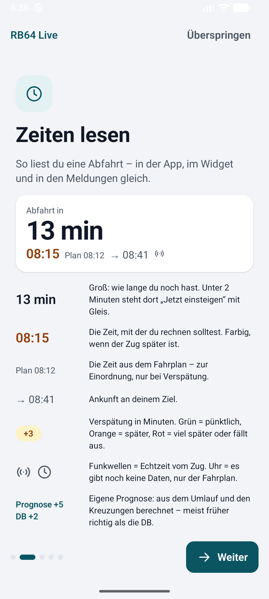
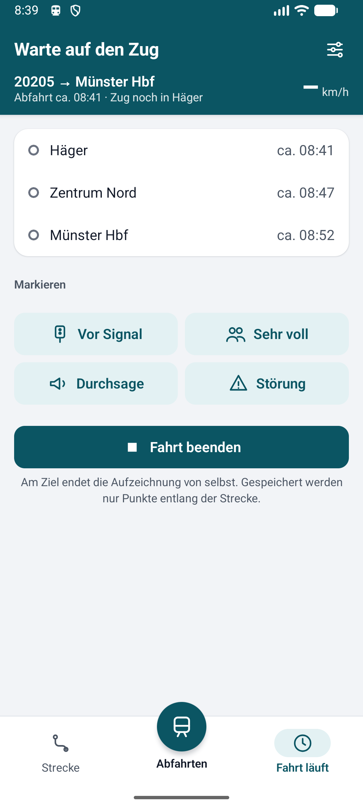
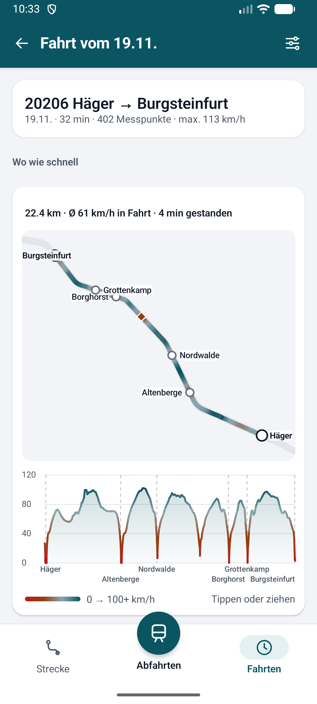

Wann fährt dein Zug wirklich?
RB64 Live zeigt Abfahrten der RB64 in Echtzeit, rechnet mit, wenn Züge an Kreuzungen aufeinander warten – und weiß dadurch oft früher als die Anzeige am Bahnsteig, wie spät es wird.
Ein privates Projekt, zurzeit im Test mit ein paar Pendlerinnen und Pendlern. Nicht im Play Store, Android 12 oder neuer.

Was die App kann
Gebaut für die eine Strecke – dafür richtig.
Eigene Prognose
Die RB64 ist größtenteils eingleisig. Ist ein Zug spät, wartet der Gegenzug – die App rechnet das voraus und nennt den Grund.
Strecke live
Alle Züge auf der Linie, entlang der echten Gleisführung, mit den Halten, an denen sie sich begegnen.
Dein Zug
Zug anheften: Er steht auf dem Sperrbildschirm, und ändert sich die Abfahrt, meldet sich das Handy.
Mitfahren
„Ich fahre mit“ zeigt unterwegs nächsten Halt, Ankunft und Tempo – auf Wunsch schon am Bahnsteig vorgeschlagen.
Deine Fahrten
Jede Fahrt mit Karte und Tempo-Profil: wo der Zug stand, wo er schnell war, wie spät er ankam.
Widgets
Groß mit den nächsten Zügen oder klein nur mit dem nächsten – ohne die App zu öffnen.
So sieht's aus
Hell und dunkel, mit Farben nur da, wo sie etwas bedeuten.



Herunterladen
Für Android 12 oder neuer. Die App kommt direkt von hier, nicht aus dem Play Store.
Version 0.16 · 25.11.2026 · 6 MBSHA-256: 4fc5327feaf5e690de5eba20ab98f02d5f37107f0bd85777ac382eb23355ca74
So installierst du sie
- Auf dem Handy die Datei
rb64-live.apkherunterladen und öffnen. - Android fragt, ob dein Browser Apps installieren darf: „Aus dieser Quelle zulassen“ einschalten, zurück, Installieren.
- Fragt Google Play Protect nach, weil es die App nicht kennt: „Weitere Details“ → „Trotzdem installieren“.
- App öffnen: Die Einführung führt durch Strecke, Zeiten und Berechtigungen.
Neue Versionen installierst du genauso drüber; deine Strecken und Fahrten bleiben erhalten.
Quellcode unter github.com/SimonRoev/rb64-live (GPL-3.0).
Signatur prüfen: Zertifikat SHA-256 65:A1:59:C0:C7:10:0B:2D:BC:12:2E:36:42:E5:51:5D:CC:26:66:5F:61:F8:A8:83:91:2A:9F:71:23:5B:4D:69
Deine Daten, kurz gesagt
- Kein Konto, keine Werbung, kein Tracking. Die App meldet sich mit einer zufälligen Kennung an.
- Strecken und Einstellungen bleiben auf dem Handy. Meldungen entstehen auf deinem Gerät.
- Fahrten nur, wenn du mitfährst – nur Punkte entlang der Bahnstrecke. Beim Löschen wählst du: nur auf dem Handy oder überall.
- Standort am Bahnhof wird nicht gespeichert. Android meldet nur „du bist am Bahnhof“.
Alles im Detail: Datenschutzerklärung
Feedback
In der App – ohne Konto
Einstellungen → Hilfe → Feedback senden, oder nach einer Fahrt „Feedback zu dieser Fahrt“. Anonym; wenn du eine Antwort möchtest, schreib eine Kontaktmöglichkeit dazu.
Auf GitHub
Fehler und Ideen als Issue – dafür brauchst du ein GitHub-Konto, dafür kann jeder mitlesen und mitdiskutieren.